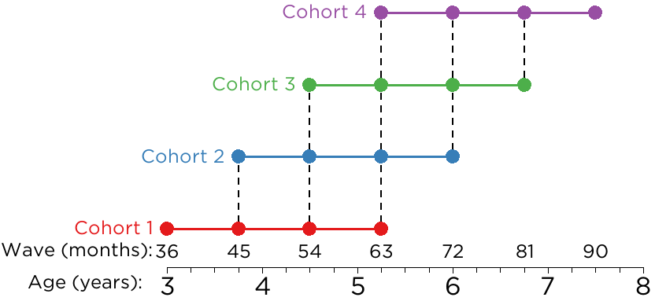

The School Readiness Study is a longitudinal study that follows children from 3–7 years of age to better understand how self-regulation and externalizing problems develop, from a bio-psycho-social perspective. In this project, we place special emphasis on the development of neural functioning, as measured by electroencephalography/event-related potentials (EEG/ERP), and how neural development influences the development of children’s self-regulation and externalizing problems. EEG is a method of measuring meaningful differences in children’s self-regulation through ERPs—EEG activity that occurs in response to stimuli—which may be a powerful way of reliably detecting patterns of brain activity that predict behavioral outcomes.
1 Study Glossary
timepoint
each 9-month interval when the target child (TC) comes in for Lab Visit 1 (LV1), Lab Visit 2 (LV2), etc.; 4 time points total per TC (T1–T4)
wave
expected age of target child (TC) in months (36, 45, 54, 63, 72, 81, 90)
cohort
subgroup of participants that reflects the age at which the participant was recruited
Cohort
Age Recruited (months)
TCIDs
1
36
1001–1199
2
45
1201–1399
3
54
1401–1599
4
63
1601–1799
LV1
First lab visit (behavioral tasks, parent–child interaction tasks)
LV2
Second lab visit (EEG)
Target Child (TC)
the child participant
TCID
the participant ID of the target child
Primary Caregiver (PC)
the parent/caregiver of the target child
Parenting Partner (PP)
the Parenting Partner of the child’s Primary Caregiver
Secondary Caregiver (SC)
the Secondary Caregiver of the child; could be a teacher, babysitter, nanny, grandparent, other relative, or another caregiver who knows the child well
2 Sample
The sample is a community sample of children and their parent(s)/caregiver(s) in addition to a secondary caregiver (e.g., teacher, babysitter). The sample is recruited from 12 counties within a 50-mile radius of Iowa City, Iowa.
2.1 Inclusion Criteria
The inclusion criteria for each cohort are:
Cohort 1: 3, 3.75, 4.5, or 5.25 years old
Cohort 2: 3.75, 4.5, 5.25, or 6 years old
Cohort 3: 4.5, 5.25, 6, or 6.75 years old
Cohort 4: 5.25, 6, 6.75, or 7.5 years old
2.2 Exclusion Criteria
The exclusion criteria are:
The child is older than 7.5 years of age (i.e., the child has aged out of study)
Anyone who does not consent
Children whose Primary Caregiver does not speak English
The child does not have normal or corrected-to-normal vision and hearing (i.e., the study tasks would not be valid for assessing the child’s skills)
The child has extremely poor expressive and receptive language skills in English (i.e., the child would not be able to speak or understand basic task instructions)
The child does not have a permanent guardian (i.e., the child is in foster care or is a ward of the State)
3 Research Design
Each participant is assessed every 9 months for each of 4 timepoints, a total of 2¼ years. Lab Visit 1 and Lab Visit 2 are completed approximately one week apart at each timepoint.

Research Design of the School Readiness Study
4 Open Science Framework
For more information on the study, including papers from the project, the available measures, the Data Dictionary, and the pre-registered hypotheses, see the project page for the School Readiness Study on the Open Science Framework (OSF): https://osf.io/jzxb8